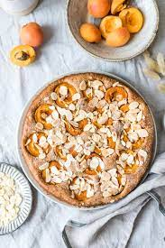
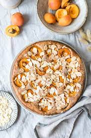
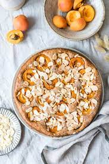

Welcome to Heavenlynn Healthy. This is a place where I share my passion with the world - delicious healthy recipes. Everything you see here is made from scratch with non-processed natural foods. Most of my recipes are meat, dairy, gluten, and refined-sugar free, and they contain a list of all of the goodness that you will treat your body to by preparing and eating them. I hope you will love the website just as much as I do. If you have any questions, feel free to contact me or take a look at my philosophy. Have a healthy day eyeryone!

Special ITEMS of this Restaurant:
| Item | Description |
|---|---|
| Item 1 | Description of Item 1 |
| Item 2 | Description of Item 2 |
| Item 3 | Description of Item 3 |
| Item 4 | Description of Item 4 |
This is an unordered list:
This is an ordered list:
HEALTHY APRICOT COFFEE CAKE Sunday ‘coffee and cake’ (Kaffee und Kuchen) is a thing here in Germany. While it has become less common to invite people over for “coffee and cake” on Sundays, I still love this tradition. ‘Coffee and cake’ has a “hygge”-character, which means that it creates a cozy environment…
overflow:scroll
overflow:hidden